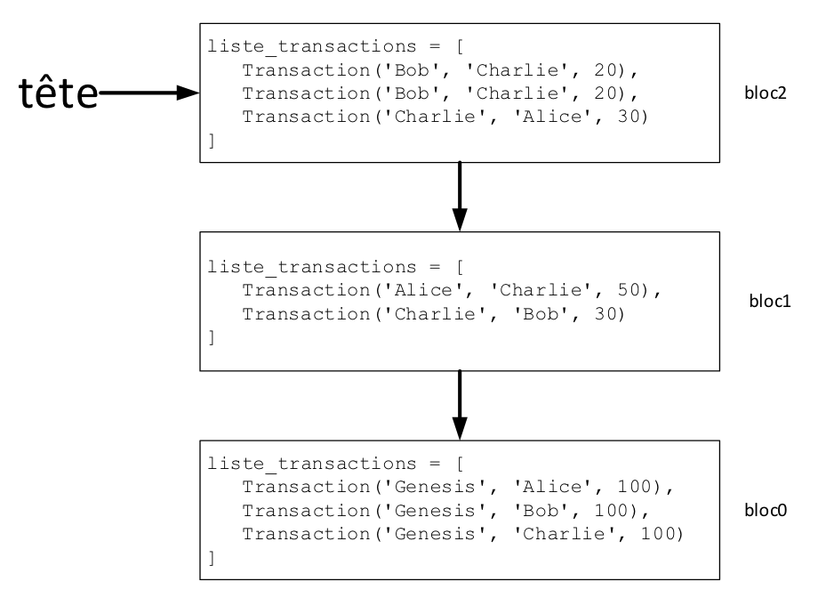

reseaux
Bac 2024 Amerique du Nord J2 exercice 3
Cet exercice porte sur la programmation objet, les structures de données, les réseaux et l’architecture matérielle.
poo adresses ip blockchain
On considère un réseau local constitué des trois machines de Alice, Bob et Charlie dont les adresses IP sont les suivantes :
- la machine d’Alice a pour adresse 192.168.1.1 ;
- la machine de Bob a pour adresse 192.168.1.2.
On rappelle que l’adresse 192.168.1.255 est l’adresse de diffusion qui sert à communiquer avec toutes les machines du réseau local et le masque de ce réseau local est 255.255.255.0. Cette adresse de diffusion est réservée et ne peut être attribuée à une machine.
Partie A
- Donner une adresse IP possible pour la machine de Charlie afin qu’elle puisse communiquer avec celles d’Alice et Bob dans le réseau local. Justifier votre réponse en donnant toutes les conditions à respecter dans le choix de cette adresse IP.
Ce réseau est utilisé pour effectuer des transactions financières en monnaie numérique nsicoin entre les trois utilisateurs. Pour cela, on crée la classe Transaction ci-dessous :
- Toutes les dix minutes, les transactions réalisées pendant cet intervalle de temps sont regroupées par ordre d’apparition dans une liste Python. Dans un intervalle de dix minutes, Alice envoie dix nsicoin à Charlie puis Bob envoie cinq nsicoin à Alice. Écrire la liste Python correspondante à ces transactions.
Pour garder une trace de toutes les transactions effectuées, on utilise une liste chaînée de blocs (ou blockchain) dont le code Python est fourni ci-dessous. Toutes les dix minutes un nouveau bloc contenant les nouvelles transactions est créé et ajouté à la blockchain.
- La figure 1 représente les trois premiers blocs d’une Blockchain. Expliquer pourquoi la valeur de l’attribut
bloc_precedentdu bloc0 est None.

Blockchain
-
À l’aide des classes Bloc et Blockchain, écrire le code Python permettant de créer un objet
ma_blockchainde type Blockchain représenté par la figure 1. -
Donner le solde en nsicoin de Bob à l’issue du bloc2.
-
On souhaite doter la classe Blockchain d’une méthode
ajouter_blocqui prend en paramètre la liste des transactions des dix dernières minutes et l’ajoute dans un nouveau bloc. Écrire le code Python de cette méthode cidessous.
- Lorsqu’un utilisateur ajoute un nouveau bloc à la Blockchain, il l’envoie aux autres membres. Ainsi chaque utilisateur dispose sur sa propre machine d’une copie identique de la Blockchain. Donner le nom et la valeur de l’adresse IP à utiliser pour effectuer cet envoi.
- On souhaite doter la classe Bloc d’une nouvelle méthode
calculer_soldepermettant de renvoyer le solde à l’issue de ce bloc. Recopier et compléter sur votre copie le code Python de cette méthode :
- Écrire l’appel à la fonction calculer_solde permettant de calculer le solde actuel de Alice
Partie B
Dans cette partie, on va améliorer la sécurité de la blockchain. Pour cela on enrichit la classe Bloc comme indiqué ci-dessous:
La fonction calculer_hash produit une chaîne de caractères appelée hash qui possède les propriétés suivantes :
- Le hash d’un bloc dépend de toutes les données contenues dans le bloc et uniquement de ces données ;
- Le calcul du hash d’un bloc est rapide et facile à calculer par une machine ;
- La moindre modification dans le bloc produit un hash complètement différent ;
- Il est impossible de déduire le bloc à partir de son hash.
- Si deux blocs ont le même hash, c’est qu’ils sont parfaitement identiques.
- L’attribut nonce est de type entier. Miner un bloc signifie trouver une valeur de nonce de telle façon que l’attribut hash du bloc commence par les deux caractères “00”. Compte tenu des propriétés précédentes, la seule façon de trouver cette valeur est de procéder à une recherche exhaustive. Expliquer en quoi consiste le fait de trouver une valeur par recherche exhaustive.
Dans la suite de l’exercice, on considère que tous les utilisateurs cherchent à miner le nouveau bloc. Le premier qui réussit, l’ajoute à la blockchain et gagne une récompense en nsicoin.
- En justifiant votre réponse, donner la valeur de l’attribut hash_bloc_precedent du bloc0.
- Sachant que le hash est écrit sur 256 bits, donner le calcul permettant d’obtenir le nombre de hash possibles.
- Recopier et compléter sur votre copie le code python de la méthode minage_bloc.